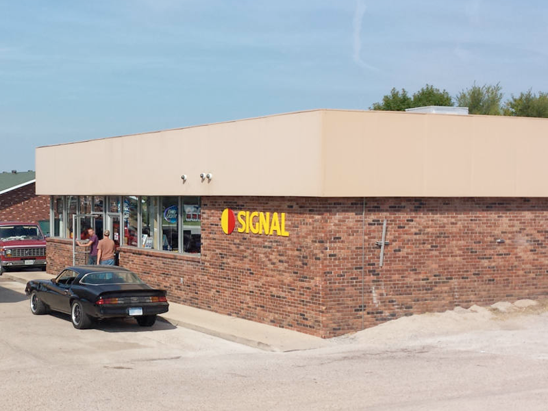
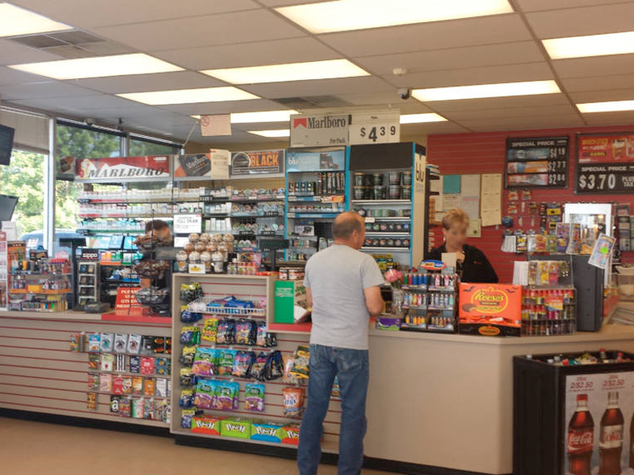
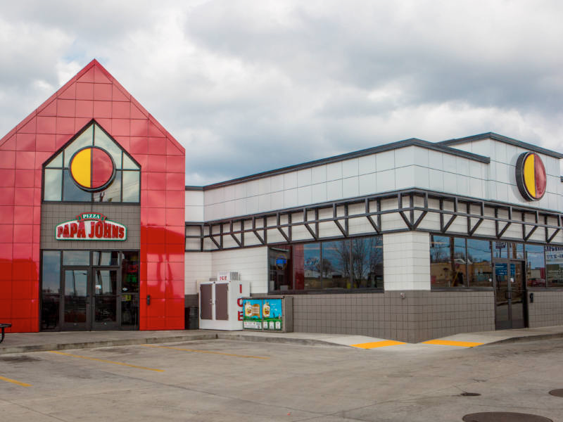
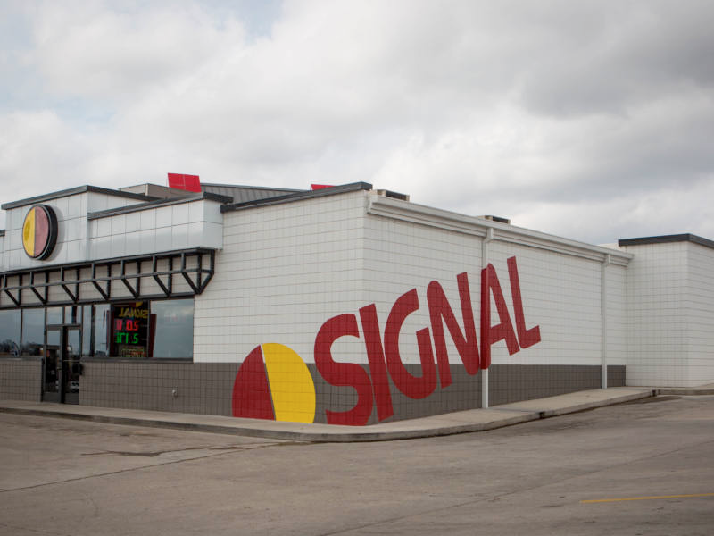
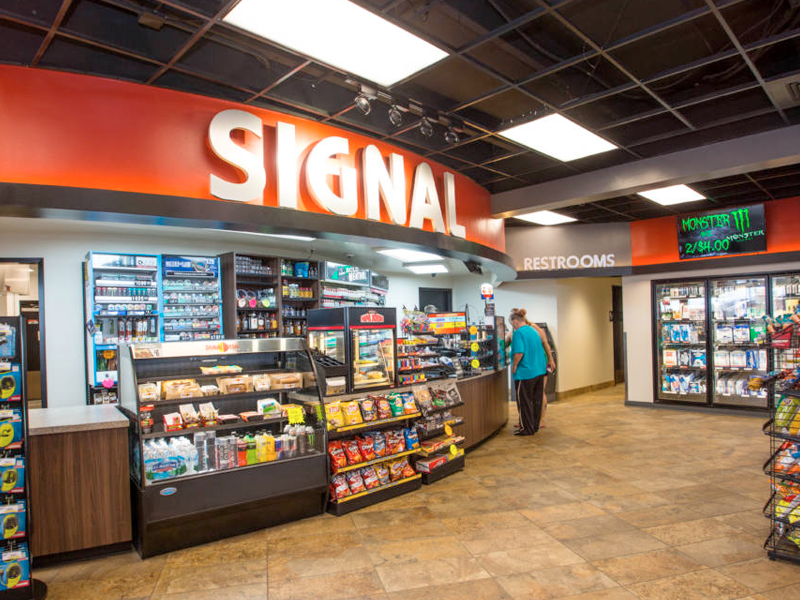
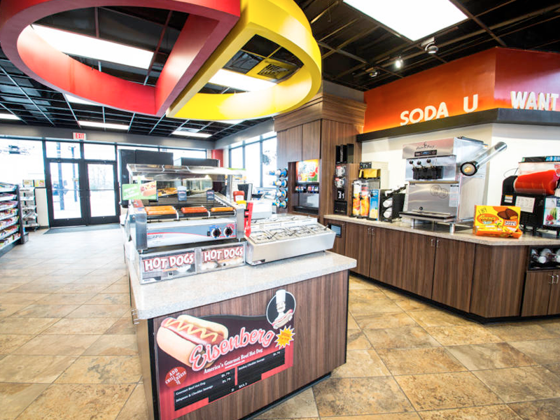

Signal - Ava, MO (Before)
Using Architecture to Enhance Your Brand: Part 1
The Task Of Branding
Branding is not just about your company logo. Though the logo is important, there is much more to it than that. Think of the impression the public has about your company. This is influenced by more than just your logo or what is on your business card: it’s how you communicate, the way you present yourself, the way you present your products or services. Do you want people to be impressed by your expertise? Should they be reassured by your professionalism? Do you want to inspire excitement, or comfort, or both?
What impression are you trying to make with your brand?
What is your business about?
How do you convey that to your clients and customers?
What Does Architecture have to do with Branding?
Architecture and the design of the space should not be overlooked when creating the branding for your business. Before a client or customer is even greeted, they are forming an impression or your brand and services. When a customer looks at your building, store, office, etc., the design of it sets the tone for your interactions with them and expresses the values of your business. If the environment that your client walks into does not match the impression you are trying to give, the space could actually work against you.
As an example, imagine a tech company that wants to brand their business as professional experts that always bring the highest quality service and top of the line products in a timely fashion. Their logo is simple, sleek and modern design. However, their office feels like it was plucked straight out of the 1970’s. They picked warm colors they personally liked, but do not make the space look or feel modern. The aesthetics look okay, but it definitely doesn’t impress. It makes you wonder if their products and services really aren’t as great and up to date as they say they are.
The Difference

vs

Now, imagine a cozy café. They want to brand themselves as friendly and approachable – they want to inspire their customers to hang around awhile. They are a down to earth business that creates delicious treats and they want their customers to feel welcome and relaxed. Their logo has some floral accents and colors from their garden. However, their restaurant is a bit bare and stark. The white walls and gray floor are clean but also give off a cold feeling. Wouldn’t some wood accents or some earthy colors help the space feel more inviting? There are many things you can do with lighting, materials, and traffic flow, etc. to enhance your customers’ experience and entice them to stick around and stay a while.

vs

The environment will influence the impression a customer has of a business. The goal is for that environment to support the business’s branding.
Signal Food Stores and Scrivener Oil Company - A Case Study
In this three-part blog series, we will talk about three different case studies and show you how the architecture and the design of each space help to enhance the company’s branding.
Scrivener Oil Company owns Signal Food Stores: 11 convenience stores and gas stations across Southwest Missouri. Each of these stores is quite unique. The original construction of each was based on what was efficient and economical at the time and what made sense for that location. This produced several interesting stores, many with flair, but minimal design elements to tie them to their brand, except the Signal logo. Many of the stores are ready for a renovation and the owners decided that over the course of the next several years, each store will be remodeled with a new look.
Signal is already an established brand with strong roots in the area. The owner’s goal was to keep the same name, logo, and vision behind the brand, but to create a cohesive look that could be applied to all of their current and future stores. They also wanted to enhance the stores without sacrificing the function or usability.
The stores have implemented several design strategies to support their branding:
- Highly Noticeable
Signal’s logo is literally a signal. They sell gasoline, and the logo is meant to be seen from the road. It tells the customers: “Look here!” The stores are designed with the intent that the building would also say: “Come here! Right here!”
- Bold, Simple, Solid Colors and Basic Geometries
Signal’s logo is a simple red and yellow circle. For the building, those colors are the accents and everything else is white, grey, or black. No additional colors are introduced to maintain a high contrast. The rest of the design is kept simple so that the accented items do not get lost or blend in.
- Accented Entries, Convenient
Signal is a convenience store, and the building is designed around the customer’s experience. The entry is always accented to say “Here! Come in here!” The intent is that the entry is easy to find and is welcoming.
- Designed for the Customer
Signal prides itself on having “impeccably clean restrooms” and in general, strives to go above and beyond for cleanliness in its stores. The stores are designed around the customer, and making sure the customers feel like the store is nice and clean is one way they invest in the customer experience.
- Modern and High-Quality Accents
Signal chose clean, industrial accents, which include painted steel bracketing over the windows and painted steel accents at the entries. They also have cool temperature accent lighting and lit signage. These elements are both on the exterior and interior.
Below are a few before and after pictures to show you how just how much proper architecture and design can enhance a space and the brand.


Signal - Ava, MO (Before)

Signal - Ava, MO (After)
The Red Tower was carefully placed to be visible from the main intersection in Ava.

Signal - Ava, MO (After)

Signal - Ava, MO (After)
On the exterior, the entry is accented and on the interior, the checkout counter is accented.

Signal - Ava, MO (After)
Back-lighting behind the signs gives a modern, vibrant look
The Original Building

As you can see, part of incorporating Signal’s brand meant finding creative and effective ways to use their logo. The Signal “Sun” is placed over every entry door and the full logo is painted in very large letters on the side of the building.
But remember, the presence of the logo doesn’t always mean that the architecture supports the brand. If you look at the before pictures, you will see that the logo was always there, but it did not always achieve the goal of saying, “Look here! Come here!” Designing the building around the principles of the brand and choosing elements of the same character – that’s how the architecture supports the brand.
Stay tuned for part two of this series, where we will talk about Scrivener Oil Company’s new Corporate Office and Training Center. We will show you how, through the use of architectural design, they were able to create a look that is consistent with the Signal brand, but creates a more professional and commercial office look that reflects their company’s staff and training high standards.